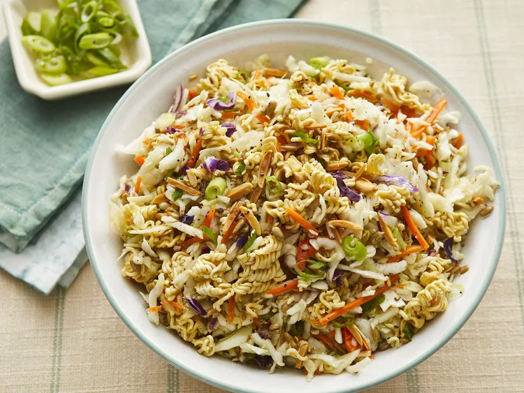

Ramen Noodle Salad

Description
This ramen noodle salad is light and crunchy. It's excellent with BBQ chicken.
This recipe is easy to make, healthy and are perfect to incorporate into a busy everyday life.
Ingredients
- 2 (3 ounce) packages chicken-flavored ramen noodles, broken into pieces, seasoning packets reserved
- ½ cup raw sunflower seeds
- ½ cup slivered almonds
- 1 (16 ounce) package coleslaw mix
- 3 green onions, chopped
Dressing
- ½ cup olive oil
- 3 tablespoons white vinegar
- 1 tablespoon white sugar
- ½ teaspoon ground black pepper